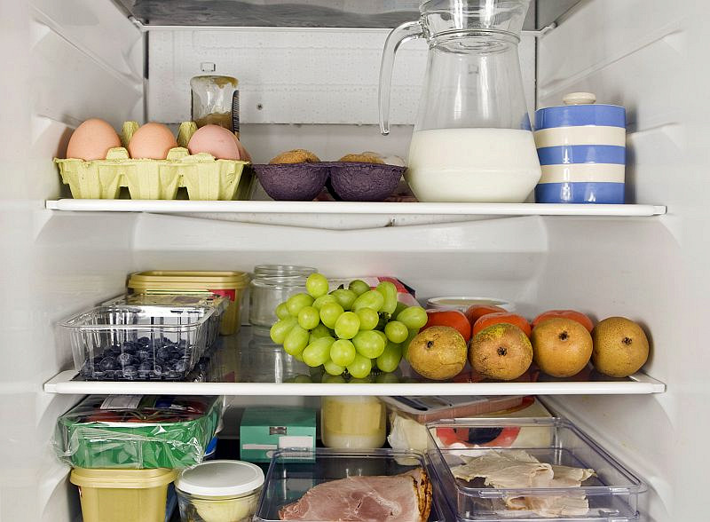

Сроки хранения в холодильнике некоторых продуктов

Автор : Наталья Грекова
Вкусная еда
Температура в основной части холодильника — примерно + 5 градусов С, вы можете ее регулировать в зависимости от температуры в доме. Чем жарче на кухне или в доме, тем меньше надо давать нагрузку на холодильник (покрутите реле в сторону деления с цифрой 2 или 3).
В какой упаковке хранить продукты в холодильнике
Все продукты в холодильнике должны быть в своей упаковке (заводской или в пакетах, фольге, бумаге (простой или пергаменте), пищевой пленке, мисочках, тарелках, кастрюльках и т.п.) либо их надо складывать в специальные контейнеры (для овощей-фруктов, яиц, сыра и т.п.).
Крепкие спиртные напитки необходимо хранить в вертикальном положении в соответствующем отделении холодильника, а все спиртные и другие напитки необходимо хранить плотно закрытыми.
Нельзя класть кусок колбасы или какой-нибудь буженины просто так, без упаковки на полку. Какие-то микробы или бактерии всегда живут даже в самом чистом холодильнике, да и на продуктах. Не стоит ускорять процесс их размножения.
Нельзя оставлять в кастрюлях с супом, рагу и другой домашней едой, которая убрана в холодильник, ложки, половники, вилки и другие посторонние предметы, которые могут образовать щель (если крышка будет неплотно закрыта, готовое блюдо испортися быстрее).
Кроме того, некоторые приоткрытые блюда выделяют собственный запах, который может оказаться невыносимым в сочетании, например, селедка с пирожным (если они обменяются запахами). Еще есть блюда, способные активно впитывать чужой запах. В общем, не ленитесь, будьте аккуратны, не разбрасывайте продукты без упаковки по полкам холодильника, закрывайте крышки, и вовремя выбрасывайте пропавшие продукты и блюда.
Овощи, фрукты и зелень в холодильникеДля хранения овощей в холодильнике обычно есть овощные контейнеры (выдвижные) или стационарная полка с поднимающейся или раздвижной дверцей. Как правило, эта полка располагается внизу основной камеры.
Если вы выкладываете овощи, зелень и фрукты в ящички холодильника в пакетах, их надо обязательно развязать или проткнуть дырочку, чтобы плоды и зелень дышали.
Если оставить фрукты, овощи и зелень в туго завязанных пакетах, без циркуляции воздуха, под пленкой будет скапливаться влага, выделяемая плодами и травами, и все постепено начнет гнить или плесневеть.
Как ускорить дозревание фруктов в холодильникеЕсли вы купили недозрелые фрукты, положите к ним в пакет яблоко и они быстрее смягчатся. А если все фрукты очень спелые, тогда храните яблоки отдельно.
Как правильно хранить начатый лимон в холодильникеНадрезанный лимон нужно положить на блюдце и хранить в холодильнике в открытом виде. На срезе цитрус немного подсохнет, но внутри будет вполне пригодным для дальнейшего использования. Начатый лимон на блюдце может храниться в холодильнике очень долго (и 2 недели, и больше), пока не высохнет. Но, надеюсь, вы используете его (лимон) в чай, салаты, к мясу и рыбе раньше, чем цитрус засохнет.
Накрывать начатый лимон (для хранения в холодильнике) нельзя, потому что под крышкой будет скапливаться влага и лимон очень быстро заплесневеет.
Как хранить свежее мясо с рынка перед приготовлениемБывает, что после походов по магазинам или по рынку и покупки мяса (фарша или рыбы), устаешь так, что нет сил ни готовить, ни даже просто помыть, нарезать и замариновать. И тогда пакеты с мясом и рыбой нужно убрать в холодильник, пусть охлаждаются и подождут вас несколько часов.
Вы можете выложить парное мясо или свежую рыбу в эмалированную, пластиковую или стеклянную миску, прикрыв тарелкой или крышкой, но обязательно надо оставить вентиляционные отверстия, чтобы мясо дышало.
Так же нельзя оставлять без вентиляционных отверстий пакеты со свежим мясом, рыбой и фаршем, если вы положили продукты в посуду прямо в пакетах. Я или развязываю пакеты, или протыкаю пальчиком дырочки.
Что будет, если сырое мясо долго лежит наглухо закрытымЕсли вы вдруг забыли развязать пакеты с мясом, рыбой или мясными полуфабрикатами и продукты уже стали припахивать, положение могут спасти промывание кусков в прохладной воде и замачивание мяса (рыбы) в лимонном соке или столовом уксусе. Кислая среда отбивает затхлый запах.
Если же от неправильного хранения у вас начал припахивать фарш, но только едва-едва и вы рискнули его готовить, то надо добавить в фарш побольше лука, чеснока, базилика, немного мяты. Это отобъет неприятный запах у фарша. Можно в фарш с запахом натереть немного лимонной цедры, а обжаренные котлеты полить лимонным соком. Если фарш очень плохо пахнет, советую его сразу же выбросить и не жалеть, здоровье дороже.
Эти же способы подойдут для исправления запаха фарша, в который попали неправильно обработанные почки или мясо хряка или быка (мясо мужских особей имеет более резкий запах и может вам не понравиться).
Как устранить неприятный запах в холодильникеЕсли в холодильнике появился запах, срочно найдите причину и выбросите все подпорченные продукты. Если плохой запах не исчез, надо промыть холодильник слабым раствором уксуса или смесью воды и лимонного сока.
Еще для устранения запаха в холодильнике можно поставить в него блюдце с ломтиком черного хлеба.
Срок хранения свежих продуктов в холодильникеСуществует желательный, не очень долгий срок хранения продуктов, в течение которого они будут свежими и сохранят свои ценные свойства и возможный (допустимый) срок хранения, в течение которого, продукты, возможно еще будут пригодны к использованию.
Помните, что срок хранения продуктов зависит не от того, когда вы положили их в холодильник, а от того, когда продукт был произведен и как и где он хранился при транспортировке с завода в магазин, либо из магазина в ваш холодильник.
Если вы 2 часа шли по жаре с пачкой творожной массы, то срок ее хранения существенно сократился, если и вовсе не истек.
Сколько хранить масло и молочные продукты в холодильникеМасло — лучше 7 дней, но не более 12.
Творог — 72 часа с момента изготовления.
Сыр — от 4 дней до 2 недель. Цельная головка сыра будет храниться дольше, чем отрезанный кусочек, который уязвим со всех сторон на срезах. Сыр лучше хранить в пергаментной бумаге, в целлофане он задыхается и быстрее плесневеет (это вредная плесень, яд, есть нельзя!).
Срок хранение кефира, молока, творожной массы и йогурта смотрите на упаковке.
Сколько хранить яйца в холодильникеЯйца лучше хранить от 10 до 14 дней. Но можно и дольше, зависит от условий хранения (температуры и необходимой влажности) и даты производства яиц.
Например, этикетка на яйцах, которые я купила сегодня утверждает: Срок годности и хранения яиц составляет 25 суток при температуре от 0 до 20 градусов С (при влажности 85-88%), и 90 суток при температуре от 0 до 2 градусов С (при той же влажности). Вопрос в том, когда яйца появились на свет, а не попали в ваш холодильник. Смотрите дату выработки на упаковкх покупных яиц либо спрашивайте у продавцов домашних, какой свежести их яйца.
Яйца могут лежать довольно долго, особенно в холодильнике или погребе. Мы как-то покупали домашние яйца в далекой деревне (дорога около 2 часов), там хозяйка собирала яички у домашних несушек в течение нескольких дней, чтобы набрать полное ведро для продажи. Яйца, дожидаясь нас, лежали в прохладном месте где-то дома (даже не в холодильнике). И мы неоднократно перевозили их в жару, вполне благополучно. Чтобы везти большое количество яиц, надо застелить дно ведра (или другой емкости) газетой, на нее выложить 1 слой яиц и потом - все остальные, прокладывая каждый слой бумагой.
Сколько можно хранить мясо в холодильникеЗапомните, чем мельче мясо, тем быстрее оно испортится. Лучше всего и дольше сохраняются крупные куски мяса.
Крупный кусок парного мяса можно хранить 1-2 дня в холодильнике, но не более 3. Третий день уже может испортить вам настроение и обед.
Мясо порубленное (нарезанное кусочками или мясо в виде фарша), совершенно свежее можно хранить в холодильнике 1 день.
Копченое мясо — около 10 дней, но не более 14.
Если вы замариновали мясные кусочки, мясо вполне может простоять в маринаде сутки. Но лучше не передерживать, можно замариновать мясо на ночь и потом готовить.
Сколько хранится рыба в холодильникеСвежая рыба может охлаждаться в холодильнике сутки, хранясь до начала приготовления. Не исключено, что рыбка протянет и еще 1 день, но я бы не стала рисковать. Помните, что рыба — скоропортящийся продукт, для которых есть единое правило.
Каждый час проведенный при комнатной температуре для скоропортящихся продуктов (в том числее — свежей, уже уснувшей рыбы и морепродуктов) означает сокращение срок хранения на 1 сутки.
А при том, что сырая рыба и в холодильнике-то хранится недолго, лучше быстрее заняться ею и не испытывать судьбу. Хранение рыбы в холодильнике замедляет, но не прекращает уровень жизнедеятельности микроорганизмов, поэтому, не увлекайтесь, готовьте рыбу быстро. Если вы наловили много рыбы, то обмойте ее, обсушите бумажными полотенцами, заверните в целлофан и заморозьте, если у вас нет сил чистить рыбу немедленно. Почистите ее потом, когда будете размораживать.
Хранение целой рыбы и филе в холодильникеСроки хранения целой рыбы всегда немного дольше, чем филе (то есть, рыбного мяса без кожи и костей, которое уже совсем беззащитно перед бактериями и они могут нападать на филе по всей его поверхности). Очищенную рыбу, филе и цельную рыбу нельзя складывать вместе, чтобы с нечищенной рыбы всякие бактерии не переселялись на обработанную рыбку).
Хранение свежей рыбы в холодильнике в маринадеНекоторые хозяйки маринуют рыбное филе всю ночь, а потом уже жарят. Я не сторонница столь длительного маринования. Рыба быстро портится, спешите ее приготовить. И съесть. Готовая жареная, вареная и тушеная рыба тоже не дожна долго стоять при комнатной температуре. Как кастрюля остынет, так и помещайте рыбное блюдо в холодильник.
Сколько хранится рыба (готовое рыбное блюдо) при комнатной температуреЕсли не получается быстро убрать рыбу в холодильник или у вас застолье, готовая рыба вполне простоит на столе в комнате 2-3 часа, как это обычно бывает на праздничном столе.
Как сохранить речную рыбу на рыбалке.
Как долго можно хранить грибы в холодильникеСухие лесные грибы в холодильнике могут пролежать до следующего дня. Если грибы сильно влажные, в липкой грязи, они могут быстро испортиться.

Чтобы не рисковать, лучше сразу же почистить грибы и проварить их 20-30 минут. Потом сменить воду, проварить еще минут 10. И после тепловой обработки остывшие вареные грибы могут простоять в холодильнике еще сутки до начала приготовления грибных блюд или до консервирования грибов.
Если же вы отварили грибы, обсушили на дуршлаге и упаковали в контейнеры, их можно заморозить до следуюшего урожая. Впрочем, можно заморозить свежие грибы: промытые, нарезанные, обсушенные и расфасованные по пакетам и так же хранить до следующего лета и до новых грибов. То есть, срок хранения вареных или сырых грибов в морозилке может быть 1 год и немного больше.
Срок хранения покупных грибов типа вешенок и шампиньонов смотрите на упаковке.
Сколько хранятся овощи и фрукты в холодильникеСухие овощи и фрукты, которым обеспечена вентиляция воздуха, могут довольно долго пролежать в холодильнике.
Дольше всего хранятся корнеплоды: морковка, репка, свекла, картофель. Они могут пролежать в контейнере холодильника больше месяца. Но контролируйте процесс, если овощ где-то отсырел или был подпорчен, он быстро испортиться и заразит плесенью своих соседей. Кабачки, баклажаны и белокочанная капуста тоже хранятся довольно долго, надо только иногда обрывать с капусты подпорченные листья или обрезать потемневшие участки на срезе начатого вилка капусты.

Из салатных овощей самый стойкий — толстостенный болгарский перец (2-3 недели), огурцы и помидоры могут пролежать и неделю, а могут испортиться быстро, например, если в магазине продавцы вымачивали эти огурцы в воде для увеличения веса, чтобы обмануть покупателя.
Срок хранения фруктов зависит от вида фрукта и его степени спелости (зрелости). Хорошо и долго (до месяца и более) хранятся яблоки, фейхоа, мандарины, апельсины, грейпфруты, свити, лимоны и другие фрукты с толстой кожурой, твердые или недозрелые.
Спелые абрикосы, персики, черешня, вишня, малина, клубника, сливы, нектарины, жимолость, бананы сохранятся в холодильнике хорошими в течение 2-4 дней. А если ягоды и фрукты очень спелые, то сутки-двое. Виноград хранится дней 4-7, в зависимости от того, в каком состоянии он попал к вам на кухню, как и спелый киви (твердые неспелые киви могут лежать очень долго).
Хорошо и долго хранятся в холодильнике сухая (не влажная) смородина — черная, красная, белая (от недели и дольше, но потом смородина начинает подсыхать. Крышкой накрывать не надо, просто прикрыть, чтобы воздух циркулировал), плотная луговая (полевая) земляника-клубника (до 5 дней) калина, шиповник, боярышник, кизил, крыжовник, черноплодная рябина (арония), ирга и другие ягоды, которые не истекают соком от легкого прикосновения.
Крышкой ягоды в контейнерах не накрывать, пусть дышат.
Хранение тортов и пирожных холодильникеЕсли вы испекли тортик с кремом, чизкейк, творожную запеканку или наделали пирожных с кремом, то не стоит их хранить дольше 2-3 дней. Многое зависит от продуктов, которые вы использовали в рецепте и способа их обработки.
Сладкие пироги без крема с начинкой простоят примерно столько же. А без начинки (бисквиты, например), могут храниться и дольше. Например, английский рождественский пудинг — рецепт может лежать и без холодильника 1,5-2 месяца. Пасхальные кексы (куличи) тоже вполне пролежат неделю или полторы в фольге при комнатной температуре, а в холодильнике еще дольше.
Некоторые бисквиты перед подачей к столу даже необходимо подержать 1-2 дня в холодильнике (завернутыми в фольгу), чтобы они дозрели и проявили истинный вкус, например, как творожный кекс или французский шоколадный торт- рецепт.
Срок хранения покупных тортов от 36 до 72 часов, смотрите этикетку на упаковке. Если торт может храниться месяц и больше, думаю, он уже совершенно несъедобен. И вам его кушать не советую.

Многое в сроках хранения зависит от того, что и как вы приготовили. Супы могут простоять 1-2 дня, иногда — дольше, но с течением времени вкус супа ухудшается.
Тушеное мясо и котлеты сохранится в холодильнике 2-4 дня. Рыбу надо использовать быстрее. Жареное мясо лучше съесть за 1-2 дня.
Если в блюдах использованы овощи и свежая зелень, которые подвергались недолгой тепловой обработке, срок хранения таких блюд сокращается. Если же в блюде много острых специй, соль, сахар — такое блюдо будет вкусным и полезным дольше.
Хранение замороженных продуктов в морозилкеВсе мясо и рыба, которые вы замораживаете или кладете в замороженном виде в свою морозилку должны быть упакованы в пакеты или обернуты пищевой пленкой, либо помещены в специальные контейнеры для заморозки. В хозяйственных магазинах продаются специальные пакеты для морозилки, которые закрываются с помощью клипсы или завязок, еще на них можно надписать название продукта и дату, когда вы заморозили (чтобы потом выкинуть старое, что не успели съесть за зиму до нового урожая).
Требования к упаковке для заморозки продуктовТара и упаковка для заморозки продуктов должна быть безо всяких дырочек и вентиляционных отверстий. Плотно закрывать продукты в морозилке нужно для того, чтобы не вымораживалась влага и, например, мясо с рыбой не сохли в морозилке. Так же надо упаковывать в отдельные пакетики замороженные овощи, ягоды, зелень и завязывать эту упаковку.
Кроме того, плотно закрытые замороженные продукты не будут обмениваться запахами.
Сливочное масло может довольно долго, до нескольких месяцев, храниться в холодильнике в фольге или в другой водонепроницаемой упаковке (в которой продается в магазине). Если ваша пачка масла в пергаменте, я бы завернула ее в пищевую пленку или поместила в пакет. Если же вы купили много масла на развес и лишнее решили заморозить — уложите его в пакет и плотно завяжите.
В морозилке можно хранить лишние сосиски, которые вы явно не успеваете съесть до истечения срока годности и решили заморозить излишки. Но замороженные сосиски несколько теряют во вкусе.
Температура в морозилкеСрок хранения продуктов в морозильной камере напрямую зависит от температурного режима. Температура в морозилке может опускаться в 3 диапазонах:
* - до минус 6 градусов С;
** до минус 12 градусов С;
*** до минус 18-24 градусов С.
Звездочки (*) нанесены на дверцу морозилки, а в инструкции к холодильнику вы можете прочитать об этом подробнее.
При 1 звездочке можно хранить продукты до 1 недели, при 2 звездочках — до 2 недель, при 3 звездочках — до месяца.
Как разморозить мясо и рыбу Куда поставить мясо и рыбу для разморозкиМясо, фарш или рыбу, которые вы достали из морозилки ,можно размораживать в основном отделении холодильника, приоткрыв упаковку для вентиляции воздуха. Такой способ размораживания будет постепенным и щадящим для мяса и рыбы, но долгим Если кусок большой, он будет размораживаться всю ночь или сутки в холодильнике. Еще мясо с рыбой могут оттаивать при комнатной температуре (в мисочке, полуприкрытыми, чтобы и не сохли, и не задохнулись).
Как срочно разморозить мясо и рыбуЕсли вы очень спешите, выставляйте мясо или рыбу размораживаться при комнатной температуре. Некоторые хозяйки даже кладут замороженные куски прямо в прохладную воду (которая все равно теплее замороженной рыбы или мяса). Но таким путем теряется сочность продукта и блюдо из него не будет очень вкусным.
В крайнем случае, можете положить в воду пакет с мороженой рыбой или мясом, чтобы оттаивающие кусочки не плавали в воде, а предохранялись от нее целлофаном и не отдавали бы свои ценные вещества понапрасну.
В горячей воде оттаивать замороженные продукты (мясо, рыбу, другие морепродукты) нельзя! Вы испортите продукты — рыба развалится, мясо будет не очень вкусным. А морепродукты и вовсе могут свариться, им много не надо.
Те, кто пользуется микроволновкой, могут разморозить мясо прямо в печи СВЧ. Я так не делаю.
Что делать с мясом, долго лежавшим в морозилкеЕсли мясо очень долго (несколько месяцев) хранилось в морозилке (например, при низкой температуре, от 18 до 24 С), то оно, конечно, вкуснее от этого не станет. Скорее всего, с течением времени мясо подсохнет и тогда после разморозки мясо лучше замариновать в лимонном соке, в гранатовом соке (или соусе наршараб) — рецепт или в вине (несладком, кисловатом). Таким путем вы сможете улучшить вкус старого мяса и добавить ему сочности.
Если же вы забыли кусок мяса в морозилке на несколько лет, то уверены ли вы, что оно — съедобное? Если жирок на мороженом мясе уже пожелтел, вряд ли оно будет полезным и вкусным. Я бы не рисковала. Только дворовым собакам.
Все то же самое относится к рыбе, которая долго лежала в морозилке. Самую древнюю рыбину лучше выкинуть, а себе купить свежей.
Как заморозить ягоды, грибы или овощиЕсли вы замораживаете ягоды, грибы, овощи или зелень для хранения, все продукты надо промыть, высушить на простых или бумажных полотенцах, расфасовать по пакетам, разделяя на такие порции, которых вам будет достаточно для 1 раза.
Живые дрожжи можно так же разделить на удобные части, завернуть в пергамент и в пищевую пленку (чтобы не сохли) и хранить в морозилке до нужного момента.
Как разморозить овощи, ягоды и грибыМногое зависит от того, куда вы планируете использовать эти размороженные продукты, и хранились ли они заранее нарезанными для блюда или все овощи/грибы крупными кусками. То есть, у вас подготовленный овощной, фруктовый или другой полуфабрикат, готовый к использованию - варке, жарке, тушению (например, смеси типа Гавайской или Мексиканской) или крупные куски, которые еще надо нарезать.
Если у вас полуфабрикат, его обычно бросают прямо в кипяток либо в кастрюлю для тушения, либо - в горячее масло на сководку.
Остальное можете разморозить при комнатной температуре и дальше использовать в блюдах по назначению.
Как выбрать хорошие замороженные продукты в магазинеКогда будете выбирать пакеты с замороженными продуктами в магазине, помните, что надо выбирать только продукты в упаковках (неповрежденных), с информацией о хранении, составе и производителе на русском языке. И выбранные вами продукты должны храниться в морозильных камерах с температурой не выше –18 градусов С.
Если продукты покрыты слоем льда или инея, значит они уже оттаивали и в пищу их использовать не стоит, овощи, да и рыба, расползутся в блюде. Кроме того, повторно замороженные продукты теряют много ценных витаминов и микроэлементов.